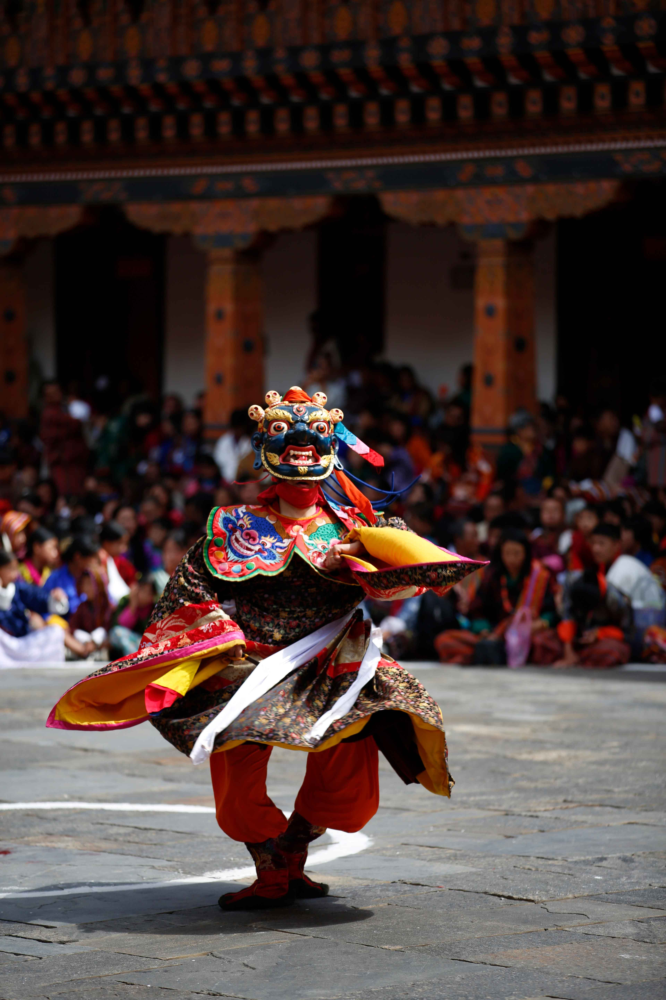

© gomoadventures.com
The Tshechu
Trip Overview
Unique & Secret Festival Tour
Experience the vibrant cultural extravaganza of Bhutan with our Tshechu festival luxury tour. This carefully crafted tour package offers a delightful blend of cultural sightseeing, nature exploration and a front-row seat to witness the grand Tshechu festivals. Tshechus are the lifeblood of Bhutanese culture and showcase the true essence of this Himalayan Kingdom. Adorned in their finest attire, devotees, tradesmen, and visitors from all walks of life gather to witness the spectacular display of colorful and lively religious dances performed by monks and laymen.
Our tour takes you to witness two of the most popular festivals, the Domchey and Tshechu, at the majestic Punakha Dzong, a true architectural masterpiece. In addition to the festivals, our luxury tour offers scenic drives through lush valleys, hikes to famous monasteries, and the opportunity to interact with local people in small villages. You will also experience the warm hospitality of local farmhouses during your stay. This luxury tour package guarantees a unique and unforgettable experience, allowing you to capture the richness of Bhutanese culture and take home wonderful memories to cherish for a lifetime.

Trip Highlights
- Time with the monk scholars of Tango Tashithang Buddhist university
- A hike to the hidden Dodedrak Buddhist monastery
- Dinner with the Punakha Pazaps, the ancient soldiers, at the Punakha Festival
- Stone baths and an authentic homestay dinner
- Scenic drives and hiking in beautiful surroundings
- A hike to the iconic Tiger’s Nest temple, and many more
Itinerary
Day 1 Paro
Arrive in Bhutan from Bangkok, Thailand. After arrival in Paro, drive to Thimphu, the capital city of Bhutan; the drive takes about one hour.
Day 2 Thimphu
In the morning, visit the tallest sitting Buddha and sightsee in the Thimphu valley, with lunch in town. After lunch, hike to Cheri Monastery and visit Tango Tashithang Buddhist University.
Day 3 Thimphu
After breakfast, we hike to the Dodedrak monastic institute — a very beautiful hike that ends at a hidden monastery.
Day 4 Punakha
Early in the morning we drive to Punakha via Dochula, where we can have breakfast at the pass, more than 10,000 feet above sea level. In Punakha we attend the Punakha festival, and in the afternoon spend time with the Pazaps, the ancient soldiers.
Day 5 Punakha
After breakfast, attend the Punakha festival again. After lunch, hike around Yebesa village and up to a scenic temple.
Day 6 Trongsa
After breakfast, drive to Trongsa and visit the Ta Dzong and Trongsa Dzong, with lunch at a local restaurant in Chazam and a stop at Chendebji Chorten.
Day 7 Phobjikha
In the morning, drive to the Phobjikha valley for a nature hike and a visit to the black-necked crane center. Phobjikha is yet another beautiful valley in the country.
Day 8 Haa
In the morning, drive to the Haa valley and enjoy the scenic drive and the Bhutanese countryside, with authentic local food such as buckwheat dumplings, and many more.
Day 9 Haa / Paro
Drive to Chelila Pass, one of the highest motorable roads in Bhutan. From the pass, hike down to Kila Goenpa nunnery, perched on the cliff overlooking the Paro valley.
Day 10 Paro / Tiger’s Nest
Hike to the iconic Tiger’s Nest Monastery. In the evening, explore Paro town and enjoy a traditional hot stone bath.
Day 11 Departure
Departure to Bangkok, Delhi, Dhaka, Kathmandu or Singapore.